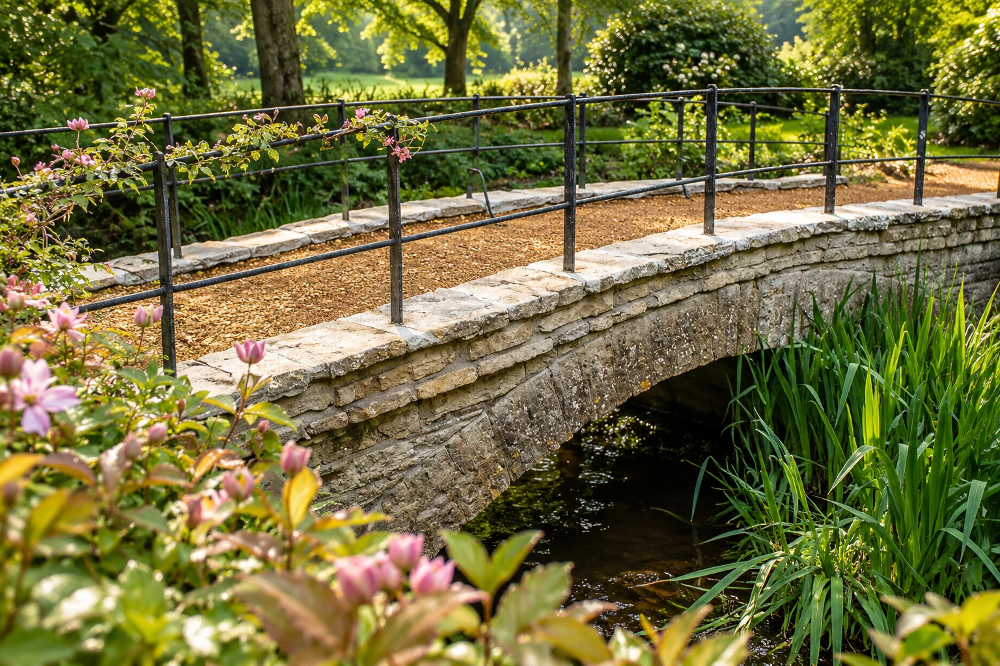

Our story
Yenstone has been building in stone since 1991, and we are still doing it the same way: by hand, one stone at a time.
We work from Perhams Farm at Yenston, near Templecombe. Dry stone walling is where we started, and the same patience and care go into all of the landscaping we do today. Patrick developed a passion for it over many years after branching away from general building. It is slow, skilled work that rewards doing it properly.
Everything else we build, from steps and terraces to paving and whole gardens, is shaped by that way of working. We plan the surfaces, the walls and the planting together, in local stone, so the finished garden feels settled from the first season.